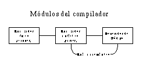
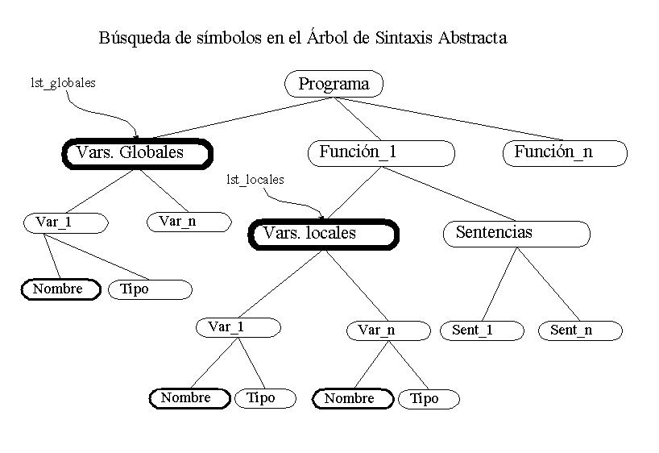
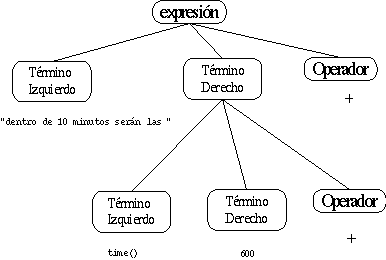

Documentación Técnica
La función de un compilador es la de traducir un código fuente a un código objeto. En el caso de hy4GL, el código fuente es el lenguaje 4GL. El compilador toma como entrada un programa escrito en lenguaje 4GL y lo traduce a su equivalente en lenguaje C. En un segundo paso se usa una herramienta externa (el compilador de C) para generar código en ensablador.
Se ha elegido el lenguaje C por varias razones. En primer lugar, el objetivo del proyecto es obtener una herramienta para programar aplicaciones de bases de datos que se relacionen con servidores basados en PostgreSQL, y PostgreSQL ofrece librerías de funciones para acceder a sus bases de datos dese lenguaje C. Por otra parte, este lenguaje permite una mayor portabilidad y una independencia de la plataforma que no se podría conseguir de otra manera.
Para no perder portabilidad, el código generado usa librerías de funciones encontradas en todas las plataformas UNIX. Para generación de la interfaz de usuario se ha optado por ncurses, una librería de funciones que ofrecen un método de acceder a terminales en modo texto independiente del tipo de terminal utilizado. Además, ncurses incluye funciones para generar y manejar menús y formularios de entrada, lo que ha facilitado esta sección del generador de código.
hy4GL se ha estructurado en dos partes: una herramienta para obtener programas ejecutables a partir de código fuente en 4GL y una librería de funciones que usarán estos programas en tiempo de ejecución. La librería de run-time incluye las funciones de manejo de la pila interna, las de conversión de tipos y funciones que puede usar el programador para obtener información como la fecha/hora actual, o la longitud de una cadena.
El compilador de 4GL consta de las siguientes partes:

Figura
1: Módulos del compilador
analizador léxico (scanner),
analizador sintáctico (parser),
analizador semántico y
generador de código.
Todas estas partes están interconectadas. La salida de una es la entrada de la siguiente. En el caso de hy4GL, las cuatro partes no son totalmente secuenciales: el análisis semántico se realiza al mismo tiempo que el análisis sintáctico y la generación de código.
El analizador léxico toma como entrada el programa escrito en lenguaje 4GL y lo trocea en tokens. A cada token se le asocia un atributo. Así un número entero produce el token TK_CONS y su atributo asociado es su valor numérico.
El analizador léxico usado en hy4GL se ha generado usando la herramienta LEX1. Se trata de una herramienta que genera programas en lenguaje C que reconocen patrones léxicos en textos. El programa se genera a partir de un fichero en el que se especifican una serie de tuplas (llamadas reglas) formadas por expresiones regulares y código en C que se ejecutará cada vez que se encuentre la expresión regular en el fuente.
El comportamiento del analizador léxico depende del contexto en el que nos encontremos: al llegar a un número entero se obtiene un token TK_CONS normalmente, pero si en este momento nos encontramos dentro de un comentario, no se obtiene token alguno. Se definen cuatro contextos distintos para el funcionamiento de este analizador léxico: un contexto inicial, en el que se encuentra normalmente el analizador; un contexto para los comentarios entre llaves (formato de Informix-4GL) y otro para los comentarios entre símbolos /* y */ (formato de C). Existe un contexto adicional en el que se encuentra el analizador entre los símbolos '.c' y 'c.' (introducción de sentencias en C embebido).
El lenguaje tiene una serie de palabras reservadas que no pueden ser usadas como nombres de variables. Cuando el analizador léxico encuentra una secuencia de caracteres que podría ser un nombre de variable, ésta es buscada en una tabla de palabras reservadas. Si se encuentra, el analizador léxico devuelve el token correspondiente a la palabra reservada. En caso contrario, devuelve el token TK_ID (identificador) y una cadena con el nombre como atributo.
La búsqueda en la lista de palabras reservadas se realiza mediante un algoritmo de búsqueda dicotómica para acelerar el proceso. La lista de palabras reservadas del lenguaje 4GL y sus tokens asociados se encuentra en la tabla de la página siguiente.
Las palabras reservadas no son sensibles a mayúsculas y minúsculas. Sin embargo, los identificadores sí lo son.
"abort" TK_ABORT "after" TK_AFTER, "and" TK_AND "as" TK_AS "at" TK_AT "attribute" TK_ATTR "attributes" TK_ATTR "before" TK_BEFORE "begin" TK_BEGIN "border" TK_BORDER "bright" TK_BRIGHT "browse" TK_BROWE "button" TK_BUTTON "by" TK_BY "call" TK_CALL "char" TK_CHAR "check" TK_CHECK "clear" TK_CLEAR "clipped" TK_CLIPPED "close" TK_CLOSE "columns" TK_COLS "command" TK_COMMAND "commit" TK_COMMIT "continue" TK_CONTINUE "create" TK_CREATE "current" TK_CURRENT "cursor" TK_CURSOR "database" TK_DB "declare" TK_DECLARE "define" TK_DEFINE "delay" TK_DELAY "delete" TK_DELETE "display" TK_DISPLAY "doble" TK_DOBLE "drop" TK_DROP "else" TK_ELSE "end" TK_END "every" TK_EVERY "exec_sql" TK_EXEC "exit" TK_EXIT "extern" TK_EXTERN "fetch" TK_FETCH "field" TK_FIELD "finish" TK_FINISH "first" TK_FIRST "footer" TK_FOOTER "for" TK_FOR "foreach" TK_FOREACH "form" TK_FORM "format" TK_FORMAT "from" TK_FROM "function" TK_FUNCTION "group" TK_GROUP "header" TK_HEADER "horizontal" TK_HORIZ "if" TK_IF "input" TK_INPUT "insert" TK_INSERT "into" TK_INTO "key" TK_KEY "label" TK_LABEL "last" TK_LAST "let" TK_LET "like" TK_LIKE "local" TK_LOCAL "main" TK_MAIN "menu" TK_MENU "move" TK_MOVE "next" TK_NEXT "of" TK_OF "on" TK_ON "open" TK_OPEN "or" TK_OR "order" TK_ORDER "output" TK_OUTPUT "over" TK_OVER "page" TK_PAGE "pipe" TK_PIPE "previous" TK_PREVIOUS "print" TK_PRINT "prompt" TK_PROMPT "radio" TK_RADIO "record" TK_RECORD "report" TK_REPORT "return" TK_RETURN "returning" TK_RETURNING "row" TK_ROW "rows" TK_ROWS "select" TK_SELECT "start" TK_START "then"
TK_THEN "title" TK_TITLE "to" TK_TO "trailer" TK_FOOTER "transaction" TK_TRANSACTION "using" TK_USING "validate" TK_VALIDATE "values" TK_VALUES "vertical" TK_VERT "where" TK_WHERE "while" TK_WHILE "window" TK_WINDOW "with" TK_WITH
El analizador sintáctico es un programa (o función) que recibe los tokens reconocidos por el analizador léxico y determina si se ajustan o no al lenguaje 4GL. En caso de que así sea, los tokens y sus correspondientes atributos se organizan formando un árbol de sintaxis abstracta.
Durante la generación del árbol de sintaxis abstracta se realizan algunas comprobaciones semánticas: como comprobar la existencia de variables, o el tipo de un cursor.
Al igual que el analizador léxico, el analizador sintáctico también se ha generado usando una herramienta diseñada para tal fin. Esta herramienta es YACC2, que genera el parser partiendo de una gramática descrita en un fichero.
En primer lugar se ha diseñado la gramática concreta del lenguaje:
fich : fichero
| database fichero
fichero : declaraciones funciones
| funciones
funciones : funciones funcion
| funcion
funcion : TK_FUNCTION TK_ID '(' ')' acciones TK_END TK_FUNCTION
| TK_MAIN acciones TK_END TK_MAIN
funcion : TK_FUNCTION TK_ID '(' lst_identif ')' acciones TK_END TK_FUNCTION
| TK_EXTERN TK_ID '(' ')' tipo
| report
| form_def
acciones : declaraciones sentencias
| sentencias
declaraciones : declaracion
| declaraciones declaracion
declaracion : TK_DEFINE lst_identif tipo
tipo : TK_ID
| TK_CHAR
| TK_CHAR '(' TK_CONS ')'
| TK_RECORD campos TK_END TK_RECORD
| TK_LIKE TK_ID '.' TK_ID
| TK_RECORD TK_LIKE TK_ID '.' '*'
campos : campos campo
| campo
campo : TK_ID tipo
sentencias : error
| sentencia
| sentencias sentencia
sentencia : fuente_c
| exit_program
| asignacion
| llamada
| retorno
| lectura
| escribir
| opventana
| bloquecontrol
| TK_DELAY expresion
| sql
| menu
| exitmenu
| sent_browse
| sent_report
| sent_form
exit_program : TK_EXIT TK_ID
fuente_c : TK_FUENTE_C
| fuente_c TK_FUENTE_C
opventana : TK_OPEN TK_WINDOW TK_ID TK_AT expresion ',' expresion
TK_WITH expresion TK_ROWS ',' expresion TK_COLS tit_ventana
| TK_OPEN TK_WINDOW TK_ID TK_AT expresion ',' expresion
TK_WITH expresion TK_ROWS ',' expresion TK_COLS
TK_ATTR atributos_vent tit_ventana
| TK_CLOSE TK_WINDOW TK_ID
| TK_MOVE TK_WINDOW TK_ID TK_TO expresion ',' expresion
| TK_CURRENT TK_WINDOW TK_ID
| TK_CLEAR TK_WINDOW
tit_ventana :
| TK_TITLE expresion
atributos_vent : atributos_vent ',' atributo_vent
| atributo_vent
| '(' atributos_vent ')'
atributo_vent : color
| color TK_OVER color
| TK_BORDER
| TK_DOBLE TK_BORDER
| TK_BRIGHT
color : TK_ID
llamada : TK_ID '(' listaexpresiones ')'
| TK_ID '(' ')'
| TK_CALL llamada
escribir : TK_DISPLAY lista_expr_disp
lista_expr_disp : expr_disp
| lista_expr_disp ',' expr_disp
expr_disp : listaexpresiones
| listaexpresiones TK_AT expresion ',' expresion
| listaexpresiones TK_ATTR atributos_vent
| listaexpresiones TK_AT expresion ',' expresion
TK_ATTR atributos_vent
lectura : TK_PROMPT TK_FOR identif
| TK_PROMPT TK_FOR TK_CHAR identif
| TK_PROMPT expresion TK_FOR identif
| TK_PROMPT expresion TK_FOR TK_CHAR identif
retorno : TK_RETURN listaexpresiones
| TK_RETURN
asignacion : TK_LET lst_identif TK_IGUAL listaexpresiones
| llamada TK_RETURNING lst_identif
listaexpresiones : expresion
| listaexpresiones ',' expresion
| '(' listaexpresiones ')'
| TK_ID '.' '*'
| listaexpresiones ',' TK_ID '.' '*'
expresion : identif
| expresion '[' expresion ']'
| expresion '[' expresion ',' expresion ']'
| TK_REAL
| TK_CONS
| TK_CADENA
| binaria
| unaria
| '(' expresion ')'
| llamada
| expresion TK_USING TK_CADENA
| expresion TK_CLIPPED
lst_identif : lst_identif ',' identif
| identif
| lst_identif ',' TK_ID '.' '*'
| TK_ID '.' '*'
identif : TK_ID
| TK_ID '.' TK_ID
binaria : expresion '+' expresion
| expresion '-' expresion
| expresion '*' expresion
| expresion '/' expresion
| expresion TK_AND expresion
| expresion TK_OR expresion
| expresion '>' expresion
| expresion TK_MAYORIGUAL expresion
| expresion TK_MENORIGUAL expresion
| expresion '<' expresion
| expresion TK_DISTINTO expresion
| expresion TK_IGUAL expresion
unaria : '-' expresion
| '!' expresion
bloquecontrol : blqif
| blqwhile
| cont_while
| exit_while
| blqfor
| cont_for
| exit_for
| foreach
| cont_foreach
| exit_foreach
foreach : TK_FOREACH TK_ID TK_INTO lst_identif sentencias TK_END TK_FOREACH
cont_foreach : TK_CONTINUE TK_FOREACH
exit_foreach : TK_EXIT TK_FOREACH
blqif : TK_IF expresion then sentencias TK_END TK_IF
| TK_IF expresion then sentencias TK_ELSE sentencias TK_END TK_IF
then :
| TK_THEN
blqwhile : TK_WHILE expresion sentencias TK_END TK_WHILE
cont_while : TK_CONTINUE TK_WHILE
exit_while : TK_EXIT TK_WHILE
blqfor : TK_FOR identif TK_IGUAL expresion TK_TO expresion
sentencias TK_END TK_FOR
cont_for : TK_CONTINUE TK_FOR
exit_for : TK_EXIT TK_FOR
sql : database
| declare
| select
| insert
| delete
| transacc_begin
| transacc_commit
| transacc_abort
| open_cursor
| close_cursor
| fetch_cursor
| exec_sql
database : TK_DB TK_ID
declare : TK_DECLARE TK_ID decl_local TK_CURSOR TK_FOR select
| TK_DECLARE TK_ID decl_local TK_CURSOR TK_FOR expresion
decl_local :
| TK_LOCAL
open_cursor : TK_OPEN TK_CURSOR TK_ID
close_cursor : TK_CLOSE TK_CURSOR TK_ID
fetch_cursor : TK_FETCH fetch_dir TK_ID TK_INTO lst_identif
fetch_dir :
| TK_NEXT
| TK_PREVIOUS
exec_sql : TK_EXEC expresion into
select : TK_SELECT lst_campos into TK_FROM lst_tablas where orden
delete : TK_DELETE TK_FROM TK_ID where
lst_campos : campo_tabla
| lst_campos ',' campo_tabla
campo_tabla : '*'
| TK_ID
| TK_ID '(' lst_campos ')'
into :
| TK_INTO lst_identif
where :
| TK_WHERE expresion
orden :
| TK_ORDER TK_BY lst_campos
lst_tablas : TK_ID
| lst_tablas ',' TK_ID
insert : TK_INSERT TK_INTO TK_ID TK_VALUES '(' listaexpresiones ')'
transacc_begin : TK_BEGIN TK_TRANSACTION
transacc_abort : TK_ABORT TK_TRANSACTION
transacc_commit : TK_COMMIT TK_TRANSACTION
menu : TK_MENU expresion menuformat menuattr menuops TK_END TK_MENU
menu : TK_MENU menuformat menuattr menuops TK_END TK_MENU
menuops : menuops menuop
| menuop
menuop : TK_COMMAND expresion ',' expresion sentencias
| TK_COMMAND expresion sentencias
| TK_ON TK_KEY '(' TK_ID ')' sentencias
exitmenu : TK_EXIT TK_MENU
menuattr : TK_ATTR atributos_vent ';' atributos_vent
| TK_ATTR atributos_vent
|
menuformat :
| TK_HORIZ
| TK_VERT
| TK_VERT TK_HORIZ
| TK_HORIZ TK_VERT
sent_browse : browse
| browse_exit
browse_exit : TK_EXIT TK_BROWSE
browse : TK_BROWSE TK_ID TK_INTO lst_identif
browse_donde
browse_titulo
TK_DISPLAY expresion
browseops TK_END TK_BROWSE
browse_donde :
| TK_FROM expresion ',' expresion TK_TO expresion ',' expresion
browse_titulo :
| TK_TITLE expresion
browseops : browseop
| browseops browseop
browseop : TK_ON TK_KEY '(' TK_ID ')' sentencias
| TK_ON TK_KEY '(' TK_CADENA ')' sentencias
| TK_ON TK_KEY '(' TK_CONS ')' sentencias
sent_report : start_r
| output_r
| finish_r
| rpt_print
start_r : TK_START TK_REPORT TK_ID
output_r : TK_OUTPUT TK_TO TK_REPORT TK_ID '(' listaexpresiones ')'
finish_r : TK_FINISH TK_REPORT TK_ID
rpt_print : TK_PRINT expresion
report : TK_REPORT TK_ID '(' lst_identif ')' declaraciones
rpt_salida rpt_formato TK_END TK_REPORT
rpt_salida : TK_OUTPUT rpt_formato_pg
rpt_formato_pg :
| rpt_item_fmt
| rpt_formato_pg rpt_item_fmt
rpt_item_fmt : TK_REPORT TK_TO TK_CADENA
| TK_REPORT TK_TO TK_PIPE TK_CADENA
| TK_PAGE TK_ID TK_CONS
rpt_formato : TK_FORMAT rpt_first_pg_hd rpt_pg_hd
rpt_before_gr rpt_every rpt_after_gr rpt_pg_ft rpt_last_rw
rpt_first_pg_hd :
| TK_FIRST TK_PAGE TK_HEADER sentencias
rpt_pg_hd :
| TK_PAGE TK_HEADER sentencias
rpt_before_gr :
| rpt_item_before_gr
| rpt_before_gr rpt_item_before_gr
rpt_item_before_gr : TK_BEFORE TK_GROUP TK_OF lst_identif sentencias
rpt_every :
| TK_ON TK_EVERY TK_ROW sentencias
rpt_after_gr :
| rpt_item_after_gr
| rpt_after_gr rpt_item_after_gr
rpt_item_after_gr : TK_AFTER TK_GROUP TK_OF lst_identif sentencias
rpt_pg_ft :
| TK_PAGE TK_FOOTER sentencias
rpt_last_rw :
| TK_ON TK_LAST TK_ROW sentencias
sent_form : form_create
| form_display
| form_dispByName
| form_inputByName
| form_exit
| form_validate
| form_current
form_create : TK_CREATE TK_FORM TK_ID
form_display : TK_DISPLAY TK_FORM TK_ID
form_dispByName : TK_DISPLAY TK_BY TK_ID lst_identif
form_inputByName : TK_INPUT TK_BY TK_ID lst_identif
| TK_INPUT TK_BY TK_ID lst_identif form_onkeys
form_afterfields TK_END TK_INPUT
| TK_INPUT TK_BY TK_ID lst_identif form_afterfields TK_END TK_INPUT
| TK_INPUT TK_BY TK_ID lst_identif form_onkeys TK_END TK_INPUT
form_onkeys : form_onkey
| form_onkeys form_onkey
form_afterfields : form_afterfield
| form_afterfields form_afterfield
form_onkey : TK_ON TK_KEY '(' TK_ID ')' sentencias
| TK_ON TK_KEY '(' TK_CADENA ')' sentencias
| TK_ON TK_KEY '(' TK_CONS ')' sentencias
| TK_ON TK_BUTTON TK_ID sentencias
form_afterfield : TK_AFTER TK_FIELD TK_ID sentencias
form_exit : TK_EXIT TK_INPUT
form_validate : TK_VALIDATE TK_FIELD
form_current : TK_CURRENT TK_FIELD TK_ID
| TK_NEXT TK_FIELD TK_ID
form_def : TK_FORM TK_ID form_elementos TK_END TK_FORM
form_elementos : form_elemento
| form_elementos form_elemento
form_elemento :
| TK_INPUT TK_ID TK_FROM expresion ',' expresion
TK_TO expresion ',' expresion form_attribs
| TK_BUTTON TK_ID TK_AT expresion ',' expresion form_attribs
| TK_RADIO TK_ID TK_AT expresion ',' expresion form_attribs
| TK_CHECK TK_ID TK_AT expresion ',' expresion form_attribs
form_attribs :
| TK_ATTR atributos_vent
Para la generación del árbol de sintaxis abstracta se ha usado la HESA3. Se trata de un programa que genera una serie de estructuras y funciones en C que facilitan la organización de los tokens y atributos formando el árbol de sintaxis abstracta. La HESA toma como entrada un fichero en el que se especifica la sintaxis abstracta del lenguaje. En nuestro caso, la sintaxis es la siguiente:
%{
#include "global.h"
%}
%union {cadena nombre;
double valor;
}
%type <nombre> Identificador
%type <valor> Constante
%%
Fichero :: var: Variables; fun: Funciones
Funciones :: Funcion *
Funcion :: nom: Identificador; par: ListaId; cod: Acciones; tip: Tipo
ListaId :: Identificador *
Rect :: y,x,yy,xx: Expresion
Tipo :: tip: Identificador; tam: Constante; cam: Variables
Acciones :: var: Variables; cod: Sentencias
Variables :: Variable *
Variable :: nom: Identificador; tip: Tipo
Sentencias :: Sentencia *
Sentencia :: FuenteC | ExitProgram | Asignacion | Llamada | Retorno | Bloque
| Leer | Escribir | Sql | OpVentana | Delay | OpMenu | OpReport
| OpForm | OpBrowse
FuenteC:: Identificador *
OpMenu:: Menu | ExitMenu | MenuAttr
Menu :: nom: Identificador; exp: Expresion; fmt: Constante;
att: MenuAttr; opc: MenuOps
MenuOps :: MenuOp *
MenuOp :: nom: Expresion; desc: Expresion; cod: Sentencias; key: Constante
MenuAttr :: fore,back: AttsVentana
OpForm:: Form | FormDisplay | FormCreate |
OpFormDispByName | OpFormInputByName | FormExit |
FormCurrentField | FormValidateField
FormDisplay:: nom: Identificador
FormCreate:: nom: Identificador
Form:: nom: Identificador; campos: FormCampos
FormCampos:: FormCampo *
FormCampo:: tipo: FormTipoCampo; nom: Identificador;
y,x,yy,xx: Expresion; attr: AttsVentana
FormTipoCampo:: FormButton | FormInput | FormLabel | FormCheck
FormDispByName:: campos: ListaId
FormInputByName:: campos: ListaId; opc: FormOnKeys; after: FormAfterFields
FormOnKeys :: FormOnKey *
FormOnKey :: nom: Identificador; cod: Sentencias
FormAfterFields :: FormAfterField *
FormAfterField :: nom: Identificador; cod: Sentencias
FormCurrentField :: nom: Identificador
OpBrowse:: Browse | BrowseExit
Browse :: nom: Identificador; cur: Identificador; vars: ListaId;
donde: Rect; titulo: Expresion; exp: Expresion; opc: BrowseOps
BrowseOps :: BrowseOp *
BrowseOp :: nom: Identificador; cod: Sentencias
OpReport :: StartReport | FinishReport | PrintReport
Report :: nom: Identificador; par: ListaId; var: Variables;
out: RptOutput; fmt: FormatoRpt
StartReport :: nom: Identificador
FinishReport :: nom: Identificador
PrintReport :: exp: Expresion
RptOutput:: Identificador *
FormatoRpt:: fph,ph:Sentencias; bg: RptGrupos; ev: Sentencias;
ag: RptGrupos; pf,lr: Sentencias
RptGrupos:: RptGrupo *
RptGrupo:: ids: ListaId; cod: Sentencias
Sql :: Database | Select | Insert | Update | Delete | Declare | ExecSQL
Database :: nom: Identificador
Declare :: nom: Identificador; local: Constante; query: Select;
es_select: Constante
Select :: cam: ListaId; into: ListaId; from: ListaId;
where: Condicion; order: ListaId; asc: Constante
ExecSQL :: comando: Expresion; into: ListaId
Insert :: tabla: Identificador; valores: ListaId
Delete :: tabla: Identificador; where: Condicion
Transacc :: op: Identificador
OpenCursor :: nom: Identificador
CloseCursor :: nom: Identificador
FetchCursor :: nom: Identificador; next: Constante; vars: ListaId
Delay :: tiempo: Expresion
OpVentana :: AbVentana | CieVentana | MovVentana | ClearWindow
AbVentana :: nom: Identificador; y, x, h, w: Constante;
attr: AttsVentana; tit: Expresion
CieVentana :: nom: Identificador
MovVentana :: nom: Identificador; y, x: Expresion
CurVentana :: nom: Identificador
AttsVentana :: AtVentana *
AtVentana :: nom: Identificador; val: Constante
Leer :: esc: Expresion; var: Variable; cha: Constante
Escribir :: lst: Displays
Displays :: Display *
Display :: y,x: Expresion; exp: Expresiones; attr: AttsVentana
Llamada :: nom: Identificador; arg: Expresiones
Llamaproc :: nom: Identificador; arg: Expresiones
Retorno :: exp: Expresiones
Asignacion :: des: ListaId; fue: Expresiones
Bloque :: While | ContinueWhile | ExitWhile | For | ContinueFor | ExitFor |
If | Foreach | ContinueForeach | ExitForeach
While :: con: Condicion ; cod: Sentencias
For :: cont: Id; desde, hasta: Expresion; cod: Sentencias
If :: con: Condicion ; codsi, codelse: Sentencias
Foreach :: nom: Identificador; vars: ListaId; cod: Sentencias
Condicion :: termi, termd: Expresion; op: Logica
Expresiones :: Expresion *
Expresion :: Id | Const | Binaria | Unaria | Llamada |
Cadena | Subcadena | Using | Clipped
Id :: nom: Identificador
Subcadena :: exp: Expresion; desde, hasta: Expresion
Using :: exp: Expresion; mascara: Identificador
Clipped :: exp: Expresion
Const :: val: Constante; tip: Identificador
Cadena :: val: Identificador
Unaria :: term: Expresion; op: Opunar
Opunar :: Menos | Negacion
Binaria :: termi,termd: Expresion; op: Opbina
Opbina :: Aritmetica | Logica
Aritmetica :: Suma | Resta | Multiplica | Divide | Pot
Logica :: Or | And | Menor | Mayor | Igual | Distinto
| Not | Menorigual | Mayorigual
A partir de este fichero, la HESA genera un conjunto de funciones y estructuras que permiten tanto la generación del árbol de sintaxis abstracta como su recorrido posterior durante la fase de generación de código.
Estas funciones se han usado para atribuir la gramática concreta que se detalló anteriormente. De esta manera, el árbol de sintaxis abstracta se va generando a medida que se van reconociendo las estructuras del lenguaje en el fichero fuente.
Debido a su extensión no se incluye en este manual el fuente de la gramática atribuida. Se puede consultar en el archivo 'sintax.y'.
Para el desarrollo de este proyecto no se ha implementado una tabla de símbolos como tal. Toda la información sobre las variables, su ámbito y su tipo se obtiene directamente del árbol de sintáxis abstracta. Cuando una sentencia hace referencia a una veriable, ésta se busca en primer lugar en la rama del árbol de sintaxis abstracta que corresponde con las declaraciones de variables locales a la función en la que nos encontramos. Si no se encuentra en esta rama, se busca en la rama que corresponde a las declaraciones de variables globales. Y por último se intenta encontrar en la lista de variables externas.
En el siguiente fragmento de la sintaxis atribuida se puede observar cómo durante el análisis sintáctico se hacen comprobaciones semánticas, como no permitir que una variable se declare más de una vez:
declaracion: TK_DEFINE lst_identif tipo
{
Arbol una,todas;
int i;
char *nomvar;
todas=NULL;
for (i=1;i<=ListaId_longitud($2);i++)
{
nomvar=Identificador_nombre(Id_nom(ListaId_elemento($2,i)));
if (Busca_Var(nomvar,lst_locales))
{
yyerror("Variable %s ya declarada",nomvar);
}
una=Variable(Asigna_nombre(nomvar),$3);
todas=Variables(todas,una);
}
$$=todas;
}
;

Figura
2. Busqueda de variables en el árbol de sintáxis
abstracta.
Cada identificador incluido en la lista de
identificadores es buscado en la lista de variables locales. La
variable lst_locales es una
variable global que apunta en cada momento a la raíz del árbol
con las declaraciones de variables locales de la función que
se está procesando. En caso de encontrarse una variable ya
declarada con el mismo nombre, se produce un error. La función
Busca_Var recorre el árbol que se le indique como segundo
parámetro, y devuelve un puntero al nodo en el que se
encuentre el identificador que se esté buscando (primer
parámetro). En caso de no encontrarlo, devuelve NULL.
/* Funcion que busca un simbolo en un arbol */
/* Si lo encuentra, devuelve un nodo con su desc. Si no, devuelve NULL */
Arbol Busca_Var(char *id,Arbol ptr)
{
Arbol aux=NULL, encontrado=NULL;
int i,cuantas;
cuantas=Variables_longitud(ptr);
for (i=1;i<=cuantas;i++)
{
aux=Variables_elemento(ptr,i);
if (!Constructor(aux))
break;
if (!strcmp(Identificador_nombre(Variable_nom(aux)),id))
{
encontrado=aux;
break;
}
}
return encontrado;
}
La última tarea que realiza el compilador es la generación del código en lenguaje C a partir del árbol de sintaxis abstracta. Este código en lenguaje C será posteriormente compilado usando un compilador de C para obtener el ejecutable final.
Se ha prestado especial atención en hacer que el fuente generado se legible. Se incluyen varios comentarios que indican la sentencia original a la que corresponden los bloques de código C. Además, el código se genera indentado para mejorar su legibilidad.
En primer lugar se genera siempre una parte fija, que incluye un comentario con el nombre del fuente original y la versión del compilador. Se incluyen los archivos de cabecera necesarios para compilar el programa en C y se generan las declaraciones de variables internas usadas por las librerías de run-time. A partir de ese momento, se comienza a recorrer el árbol de sintaxis abstracta que se ha generado durante la fase de análisis sintáctico.
El primer nodo del árbol de sintaxis abstracta corresponde a la lista de variables globales del programa. La misma función con la que se generan las variables globales es la siguiente:
void genVariables(Arbol vars, char *prefijo)
{
Arbol aux;
int i,cuantas;
cuantas=Variables_longitud(vars);
for (i=0;i<cuantas;i++)
{
aux=Variables_elemento(vars,i+1);
if (!Constructor(aux))
break;
genVariable(aux,prefijo);
}
}
La función recorre todos los elementos de la lista de variables, llamando a la función genVariable para cada nodo. La función genVariable será la que realmente genere el código para cada variable:
void genVariable(Arbol var, char *prefijo)
{
cadena tipo,nombre;
int tamanno;
strcpy(nombre, Identificador_nombre(Variable_nom(var)));
strcpy(tipo, Identificador_nombre(Tipo_tip(Variable_tip(var))));
tamanno=Constante_valor(Tipo_tam(Variable_tip(var)));
if (!strcmp(tipo,"WINDOW"))
genera(indentacion,"%s _WINDOW *%s=NULL;\n",prefijo,nombre);
else if (!strcmp(tipo,"FORM"))
{
genera(indentacion,"%s _4GLFORM %s=NULL;\n",prefijo,nombre);
genera(indentacion,"%s _4GLFORM _GenForm%s();\n",prefijo,nombre);
}
else if (!strcmp(tipo,"CURSOR"))
genera(indentacion,"%s _CURSOR _C%s;\n",prefijo,nombre);
else if (!strcmp(tipo,"LCURSOR"))
genera(indentacion,"%s _CURSOR _C%s;\n",prefijo,nombre);
else if (!strcmp(tipo,"MENU"))
{
genera(indentacion,"%s _MENU %s;\n",prefijo,nombre);
genera(indentacion,"%s ITEM *%s_items[%d];\n",prefijo,nombre,tamanno);
}
else if (!strcmp(tipo,"BROWSE"))
genera(indentacion,"%s _BROWSE %s;\n",prefijo,nombre);
else if (!strcmp(tipo,"REPORT"))
{
genera(indentacion,"/* Funciones del report %s */\n",nombre);
genera(indentacion,"%s int _RPT_%s_inic;\n",prefijo,nombre);
genera(indentacion,"void _Fn_STARTRPT_%s();\n",nombre);
genera(indentacion,"void _Fn_OutputRpt_%s();\n",nombre);
genera(indentacion,"void _Fn_RPT_%s();\n",nombre);
genera(indentacion,"/*---*/\n");
}
else if (!strcmp(tipo,"int"))
genera(indentacion,"%s int %s;\n",prefijo,nombre);
else if (!strcmp(tipo,"float"))
genera(indentacion,"%s double %s;\n",prefijo,nombre);
else if (!strcmp(tipo,"date"))
genera(indentacion,"%s _4GLDATE %s;\n",prefijo,nombre);
else if (!strcmp(tipo,"time"))
genera(indentacion,"%s _4GLTIME %s;\n",prefijo,nombre);
else if (!strcmp(tipo,"datetime"))
genera(indentacion,"%s _4GLDATETIME %s;\n",prefijo,nombre);
else if (!strcmp(tipo,"interval"))
genera(indentacion,"%s _4GLINTERVAL %s;\n",prefijo,nombre);
else if (!strcmp(tipo,"char"))
genera(indentacion,"%s char %s[%d];\n",prefijo,nombre,tamanno+1);
else if (!strcmp(tipo,"record"))
genRecord(var);
else
genera(indentacion,"%s %s %s;\n",prefijo,tipo,nombre);
}
La función comprueba el tipo de datos de la variable, y genera una declaración en C para ese tipo de datos. Aquellos tipos que existen en C (char, int, float) se declaran directamente, mientras que los tipos añadidos por el lenguaje 4GL (date, time, datetime, interval) y las variables de control necesarias para el manejo de menús, consultas SQL, formularios, ventanas, etc. se declaran como tipos definidos en el archivo de cabecera hy4gl.h
Si la variable que se está generando es de tipo reistro, recorrerá la lista de campos, generando un registro de C con la estructura necesaria:
void genRecord(Arbol var)
{
Arbol aux;
int i,cuantas;
cuantas=Variables_longitud(Tipo_cam(Variable_tip(var)));
genera(indentacion,"struct\n");
genera(indentacion,"{\n");
indentacion++;
for (i=0;i<cuantas;i++)
{
aux=Variables_elemento(Tipo_cam(Variable_tip(var)),i+1);
if (!Constructor(aux))
break;
genVariable(aux,"");
}
indentacion--;
genera(indentacion,"} %s;\n",Identificador_nombre(Variable_nom(var)));
}
El siguiente nodo del árbol de sintaxis abstracta es la lista de funciones que se encuentran en el fuente en 4GL. Esta lista también incluye la definición de los listados y de los formularios de entrada, que se definen fuera de las funciones.
El generador de código recorre esta lista, comprobando si se trata de una función, un listado o un formulario de entrada, y generando el código correspondiente a cada uno de ellos.:
void genFunciones()
{
Arbol aux;
int i,cuantas;
cuantas=Funciones_longitud(Fichero_fun(raiz));
for (i=1;i<=cuantas;i++)
{
aux=Funciones_elemento(Fichero_fun(raiz),i);
if (!Constructor(aux))
break;
if (Constructor(aux)==REPORT)
genReport(aux);
else if (Constructor(aux)==FORM)
genForm(aux);
else if (Constructor(Funcion_cod(aux)))
genFuncion(aux);
}
}
En el caso de que se tratara de una función, se generan las declaraciones de las variables locales y de los parámetros. Seguidamente se genera el código necesario para desapilar los parámetros de entrada y por último se genera el código de las sentencias que componen la función:
void genFuncion(Arbol fn)
{
indentacion=0;
lst_locales=Acciones_var(Funcion_cod(fn));
printf("Generando función: %s\n",Identificador_nombre(Funcion_nom(fn)));
genera(indentacion,"\n/*********************************************\n");
genera(indentacion," * Función: %-30.30s*\n",
Identificador_nombre(Funcion_nom(fn)));
genera(indentacion,"/***********************************************/\n");
if (strcmp(Identificador_nombre(Funcion_nom(fn)),"main"))
genera(indentacion,"void _Fn_%s()\n",
Identificador_nombre(Funcion_nom(fn)));
else
genera(indentacion,"main(int argc, char *argv[])\n");
genera(indentacion,"{\n");
indentacion=1;
/* Primero genero las vars locales */
if (Constructor(Acciones_var(Funcion_cod(fn))))
genVariables(Acciones_var(Funcion_cod(fn)),"");
/* La funcion 'main' es un caso especial... */
if (!strcmp(Identificador_nombre(Funcion_nom(fn)),"main"))
{
genera(indentacion,"int _i,_j; /* Usadas para inicializar los colores */\n");
genera(indentacion,"arg_count=argc-1; _arg_val=argv; /* Variables globales que guardan los parametros */\n");
genera(indentacion,"/* Preparo las curses */\n");
genera(indentacion,"_4GLinit();\n");
if (db!=NULL)
{
genera(indentacion,"/* Preparo los valores de los flags de estado */\n");
genera(indentacion,"notfound=PGRES_EMPTY_QUERY;\n");
genera(indentacion,"found=PGRES_TUPLES_OK;\n");
genera(indentacion,"ok=PGRES_COMMAND_OK;\n");
genera(indentacion,"/* Conecto con la base de datos */\n");
genera(indentacion,"_conn=_4GLsetdb(\"%s\");\n\n",
Identificador_nombre(Database_nom(db)));
genera(indentacion,"if (_4GLfechaEuro==1)\n");
genera(indentacion,"{\n");
genera(indentacion+1,"_4GLexec(_conn,\"set DateStyle to 'European';\");\n");
genera(indentacion+1,"_4GLexec(_conn,\"set DateStyle to 'SQL';\");\n");
genera(indentacion,"}\n");
}
genera(indentacion,"pila_param=nueva_pila();\n");
genera(indentacion,"pila_exp=nueva_pila();\n\n");
}
/* Leo los parámetros recibidos */
if (Constructor(Funcion_par(fn)))
genParams(Funcion_par(fn));
/* Genero las acciones */
genSentencias(Acciones_cod(Funcion_cod(fn)));
if (!strcmp(Identificador_nombre(Funcion_nom(fn)),"main"))
{
genera(indentacion,"_4GLexit(0); /* Terminamos */\n");
}
indentacion=0;
genera(indentacion,"} /* Fin de la función %s */\n\n",Identificador_nombre(Funcion_nom(fn)));
}
La función main es un caso especial, ya que es la primera que se ejecuta al iniciar el programa. En la generación del código para esta función se incluyen sentencias para inicializar la interfaz de usuario (ncurses), preparar el valor de algunas variables globales y conectar con la base de datos si es necesario. Al final de la función se genera el código para cerrar la conexión con la base de datos.
No se va a estudiar aquí la generación de código de las distintas sentencias que componen el lenguaje. Se expone como ejemplo la generación del código de las sentencias de asignación, que es representativo del uso de la pila y de las características de la conversión automática de tipos.
Para la evaluación de expresiones se ha implementado una pila interna. Esta pila es gestionada en tiempo de ejecución por el programa usando las funciones que se incluyen en la librería de run-time. La pila se ha implementado como una lista enlazada. Cada elemento de la lista es un registro con la siguiente estructura:
enum tipos {TIPO_VOID, TIPO_INT, TIPO_FLOAT, TIPO_STR,
TIPO_DATE, TIPO_TIME, TIPO_DATETIME, TIPO_INTERVAL,
TIPO_RECORD};
struct pila
{
enum tipos tipo;
union
{
char *cadena;
long entero;
double real;
_4GLDATE fecha;
_4GLTIME time;
_4GLDATETIME datetime;
_4GLINTERVAL interval;
} valor;
struct pila *siguiente;
};
El campo tipo indica el tipo del dato que se almacena en este elemento de la pila. Esto es necesario puesto que la pila puede albergar datos de cualquier tipo, y es necesario conocer el tipo del dato para operar con él. El campo valor se define como una unión de todos los tipos básicos soportados por el lenguaje.
Las operaciones que se pueden realizar sobre la pila son las siguientes:
Apilar valores
Se han implementado funciones para apilar cada uno de los tipos de datos básicos soportados por el lenguaje. Al apilar un dato se guarda también información sobre su tipo
Desapilar valores
Hay una función para desapilar cada tipo de datos. La función comprueba el tipo del dato que hay en la cima de la pila y realiza las conversiones necesarias para convertirlo al tipo de datos deseado.
Operar con los valores de la cima de la pila
Se han implementado las siguientes operaciones:
Suma: Esta operación toma dos datos de la cima de la pila, los suma y apila el resultado.
El tipo de datos del resultado así como su contenido dependerá de los tipos de datos de los operandos. Así, si se suman dos cadenas el resultado es una nueva cadena, resultado de concatenar las dos iniciales, mientras que si se suman dos números el resultado es otro número, resultado de sumar los dos originales.
Resta/Producto/Division: Se toman dos datos de la cima de la pila, se restan y se apila el resultado.
Comparar los valores de la cima de la pila
Se han implementado también las operaciones de comparación. Todas estas operaciones toman dos valores de la pila y apilan un 1 o un 0, según se haya o no cumplido la comparación.
Operaciones lógicas.
AND: esta operación toma dos valores de la pila y apila un 0 si alguno de los dos valores originales era 0, o un 1 en caso contrario.
OR: esta operación toma dos valores de la pila y apila un 0 si los dos valores originales eran 0, o un 1 en caso contrario.
NOT: esta operación toma un valor de la pila y apila un 1 si el valor original era un 0, o un 0 en caso contrario.
Veamos un ejemplo:
define cadena char(50)
let cadena="dentro de 10 minutos seran las "+(time()+600)
El árbol de sintaxis abstracta de la expresión será:

Figura
3. Evaluación de expresiones
Y el código que se genera es el siguiente:
push_int(pila_exp, 600);
_Fn_time();
op_suma(pila_exp);
push_str(pila_exp, "Dentro de 10 minutos seran las ");
op_suma(pila_exp);
_4GLstrncpy(cadena,pop_str(pila_exp),50);
push_str(pila_exp, cadena);
wprintw(curwin,"%s",pop_str(pila_exp));
En primer lugar se apila el valor 600, de tipo entero
Seguidamente se llama a la función time(). Esta función apila un dato de tipo TIME conteniendo la hora actual.
La función op_suma() desapila los dos elementos que están en la cima de la pila. Comprueba el tipo de dato del primero de ellos (TIME) y del segundo (INTEGER) y realiza la operación correspondiente: sumarle al valor de tipo TIME la cantidad de segundos indicada por el otro valor. El resultado es otro valor de tipo TIME que es apilado.
Ahora se apila la cadena "dentro de 10 minutos seran las " y se vuelve a llamar a la función op_suma.
La funcion op_suma() desapila los dos elementos de la cima de la pila. El primero de ellos es de tipo STRING y el segundo es de tipo TIME. La función convierte el dato de tipo TIME a tipo STRING y concatena las dos cadenas. El resultado es apilado.
Ahora queda en la pila un solo dato, de tipo STRING que contiene el resultado de la operación. Para realizar la asignación, se desapila la cadena y es copiada en la variable de destino.
Como se ha visto en este ejemplo, la pila se usa tanto para evaluar expresiones como para pasar parámetros a funciones y recibir los valores devueltos. De esta manera se facilita el uso de los valores devueltos por funciones en expresiones (como en el caso del ejemplo), ya que al salir de las funciones ya nos encontramos con los valores devueltos en la pila.
Indice
Introducción 1
Analizador léxico (scanner) 2
Palabras reservadas 3
Analizador sintáctico (parser) 4
Gramática concreta 4
Árbol de sintaxis abstracta y tabla de símbolos 15
Generación de Código 21
Variables globales. 21
Funciones 24
Evaluación de expresiones: La pila 26
1Concretamente, la versión 2.5.4 del GNU Fast lexical analyzer generator (flex)
2En realidad se ha usado BISON. Se trata del generador de parsers de GNU. BISON es compatible con el estándar YACC, aunque aporta bastantes características no incluidas en YACC.Sin embargo, y para evitar problemas de portabilidad, no se ha usado ninguna de estas características.
3HESA: Herramienta de Especificación de Sintaxis Abstracta, del Dpto de Lenguajes y Sistemas Informáticos de la Universidad de Sevilla.
hy4GL:
compilador de lenguaje 4GL para PostgreSQL 3-